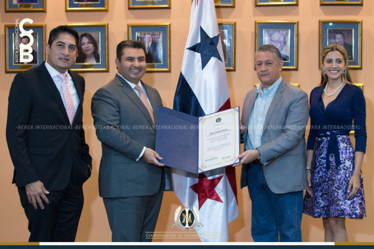

Reconocimientos
Novena Etapa
Nombran al Apóstol Naasón Joaquín Puente para unir a las Américas

La presencia del Excelentísimo Apóstol de Jesucristo, Naasón Joaquín García en esta República de Panamá, ha vestido de luz a este país y hoy la Asamblea Nacional -Cámara de Diputados- dio una cálida recepción y entregó un gran reconocimiento al Embajador de los Cielos.
El Gran Apóstol de Jesucristo Naasón Joaquín fue recibido con todos los protocolos de la Asamblea y en la bienvenida oficial al Palacio Legislativo, el diputado Alfredo Pérez dijo cosas bellas como esta: “Agradezco a Dios la oportunidad de estar con el Apóstol de Jesucristo. Es un honor tener a alguien como Usted en este país” y explicó que el reconocimiento era para que se motive a seguir en esa lucha. “Que no sea la última vez que nos acompañe” le deseó.
El Excelentísimo Apóstol del Señor, al agradecer esta honra del Poder Legislativo de Panamá, patentizó su compromiso de seguir predicando el Evangelio de Jesucristo porque mediante ello, se crean principios y valores que son de gran ayuda a los gobiernos.
También dejó sus respetos a este que calificó de maravilloso país.
El Vicepresidente de la Asamblea, Luis E. Quiroz, quien encabezó estos honores al Ungido de Dios, habló de paradojas que ve el mundo pues mientras en otras latitudes -dijo- hay barreras, en Panamá el Apóstol de Jesucristo es todo un puente para unir a las Américas.
El gozo de la Iglesia del Señor por estos homenajes al Excelentísimo Apóstol de Jesucristo Naasón Joaquín en la 9a Etapa de su Gira Universal, sigue creciendo día a día.
En Panamá no solo los hermanos le dieron gran bienvenida: también las autoridades.
Y las bendiciones siguen.